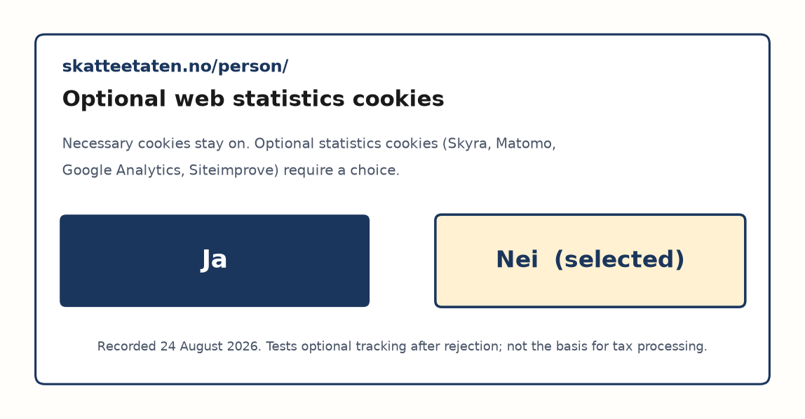

Figure 1
Webbkoll Start Page for klassekampen.no

Note. klassekampen.no is fifth-highest on third-party requests in Table 2, so the same site is used as the method example (5th of July Foundation, n.d.-c; KeyCDN, n.d.).
Humna Akhtar, Mithun Chandra Debnath, Karina Sætersdal Nilssen, and Sumit Prasad Sah
Department of Computer Science, Oslo Metropolitan University
ACIT4280 Privacy by Design
Group Assignment 1A (Group 1-A)
Due: 3 September 2026, 08:00 (Oslo time)
26 August 2026
Assignment 1A has two parts. First we measure third-party data sharing, cross-border export and tracking on 18 Norwegian-facing websites with Webbkoll (5th of July Foundation, n.d.-c). The sites cover shopping, government, news and media, and sport. For each site we record server location, internal and external cookies, third-party requests, and the countries data is shared with, excluding Norway. Then Group 1-A applies the Information Commissioner's Office (ICO) lawful basis tool to five selected privacy notices (Information Commissioner's Office, n.d.-b), with one concrete processing purpose per ICO run. Table 5 holds the completed summary. This paper is not Assignment 1B.
The legal frame is the General Data Protection Regulation (GDPR; European Union, 2016), especially Articles 5, 6, 25 and 32, together with the ePrivacy rules on cookies (European Parliament & Council of the European Union, 2002, 2009). Webbkoll is a technical scan. It does not read a privacy notice, it does not click cookie banners, and it does not decide lawfulness under Article 6.
We used the English Webbkoll interface named in the brief (5th of July Foundation, n.d.-c). Figure 1 shows the start page. A result page is one live Chromium visit with no add-ons, no Do Not Track, and no consent click (5th of July Foundation, n.d.-a, n.d.-b). The scan clock on that page is part of the measurement (European Union, 2016, Art. 5(1)(a)). Stored results last 24 hours, so a later visit can differ. We never average two clocks.
Server location is the Country field in KeyCDN IP Location Finder for the IP on the result page (KeyCDN, n.d.). If Look up prints only a network name, we write none returned. A company name is not a country. The same Look up is used on each unique third-party host IP. Norway is dropped from the country list. Cloudflare rows without a Country field are none returned and are not counted. Exact IPs may be reused; nearby content-delivery addresses are looked up again.
Internal cookies, external cookies and third-party requests are the three summary-strip counts. Request volume is not cookie volume: a site can contact many hosts without setting a third-party cookie. Table 1 maps each Webbkoll block to the GDPR control it can illustrate. Article 6 is not on the page (Intersoft Consulting, n.d.; European Union, 2016).
We keep two tables on purpose. Table 2 is the first clock the group logged. Table 3 is a later clock plus a stricter country count. That split is an integrity choice under Article 5(1)(a): we show what changed instead of silently editing the first row (European Union, 2016).
Table 1
Webbkoll Result Blocks and GDPR Controls
| Webbkoll block | What the page shows | GDPR hook |
|---|---|---|
| Summary strip | HTTPS, cookies, request count, IP | Input to the assignment table |
| HTTPS / HSTS | Encryption in transit | Arts. 5(1)(f), 25, 32 |
| CSP, SRI, headers, referrer | Script sources, integrity, origin leak | Arts. 5(1)(c), 25, 32 |
| Cookies / localStorage | Who stores what, and for how long | Arts. 5(1)(a), 5(1)(c), 5(1)(e); ePrivacy |
| Third-party requests | Hosts contacted on load | Arts. 5(1)(b)-(c), 25 |
| IP / Look up | Server country | Chapter V, Arts. 44-47 |
| Not on the page | Lawful basis in the privacy notice | Art. 6; ICO tool |
Note. Recitals explain; articles bind (European Union, 2016; Intersoft Consulting, n.d.). Webbkoll does not replace the ICO tool.
Figure 1
Webbkoll Start Page for klassekampen.no
Note. klassekampen.no is fifth-highest on third-party requests in Table 2, so the same site is used as the method example (5th of July Foundation, n.d.-c; KeyCDN, n.d.).
The 18 services were split equally in the group. Table 2 is the first timestamped fill on 20 August 2026. It is never overwritten. Table 3 is a later Webbkoll clock on the same day, with third-party countries from host-by-host KeyCDN Look ups on 21 August 2026. Scan times and redirects are in the Table 3 note.
Seventeen of 18 sites had zero third-party cookies. The exception is ikea.no (two cookies) after redirect to ikea.com. Third-party requests in Table 2 range from 1 (lanekassen.no) to 113 (fotball.no). Figure 2 ranks those request counts. Figure 3 groups them by sector: news and media is highest; government is lowest; sport is high because of fotball.no. Shopping sits in the middle: babyshop.no is loud on a later clock (101 requests), while ikea.no is quieter on requests but is the only row with external cookies.
Cross-border labels are conservative. The United States appears often in Table 3 even when a host name looks European. That is a Chapter V issue only if personal data are transferred; Webbkoll cannot prove that a request contains personal data, only that a host in that country was contacted (European Union, 2016, Arts. 44-47).
Table 2
First Webbkoll Measurement of 18 Norwegian-Facing Services (20 August 2026)
| Name of service | Sector | Server | Int. | Ext. | Req. | n countries | List of countries |
|---|---|---|---|---|---|---|---|
| xxl.no | Shopping | US | 3 | 0 | 26 | 4 | PL, IE, CA, SE |
| cdon.no | Shopping | CA | 4 | 0 | 33 | 3 | CA, US, SE |
| ikea.no | Shopping | CA | 8 | 2 | 15 | 2 | CA, US |
| babyshop.no | Shopping | CA | 1 | 0 | 45 | 2 | SE, US |
| skatteetaten.no | Government | CA | 5 | 0 | 14 | 5 | IE, SE, FR, GB, NO, CA |
| barnevernet.no | Government | NO | 2 | 0 | 25 | 4 | SE, DE, CA, NO, GB |
| altinn.no | Government | CA | 0 | 0 | 5 | 1 | US |
| lanekassen.no | Government | NL | 0 | 0 | 1 | 1 | DE |
| aftenposten.no | News / media | SE | 5 | 0 | 48 | 5 | SE, CA, US, DE, IE |
| nrk.no | News / media | SE | 10 | 0 | 7 | 1 | SE |
| netflix.no | News / media | GB | 6 | 0 | 22 | 2 | GB, CA |
| document.no | News / media | DE | 4 | 0 | 51 | 6 | US, CA, SE, FR, DE, FI |
| klassekampen.no | News / media | US | 4 | 0 | 46 | 2 | SE, US |
| spotify.no | News / media | US | 3 | 0 | 10 | 2 | SE, US |
| worldofwarcraft.com | News / media | IE | 4 | 0 | 90 | 4 | FR, SE, CA, US |
| dnt.no | Sport | GB | 6 | 0 | 16 | 4 | SE, CA, NL, FI |
| fotball.no | Sport | NL | 8 | 0 | 113 | 5 | SE, DK, CA, US, NL |
| skiforeningen.no | Sport | SE | 1 | 0 | 14 | 3 | NL, US, SE |
Note. Int. = internal cookies; Ext. = external cookies; Req. = third-party requests; n countries = unique KeyCDN countries excluding Norway. Lists may still show NO when it appeared on the first worksheet; the count column excludes it. Names follow the brief even when Webbkoll followed a redirect.
Table 3
Later Webbkoll Clock (20 August 2026) and KeyCDN Third-Party Countries (21 August 2026)
| Name of service | Sector | Server | Int. | Ext. | Req. | n countries | List of countries |
|---|---|---|---|---|---|---|---|
| xxl.no | Shopping | US | 3 | 0 | 26 | 2 | IE, US |
| cdon.no | Shopping | US | 4 | 0 | 33 | 1 | US |
| ikea.no | Shopping | US | 8 | 2 | 15 | 1 | US |
| babyshop.no | Shopping | none returned | 1 | 0 | 101 | 2 | IE, US |
| skatteetaten.no | Government | US | 5 | 0 | 14 | 4 | FR, IE, SE, US |
| barnevernet.no | Government | NO | 2 | 0 | 25 | 4 | DE, IE, SE, US |
| altinn.no | Government | none returned | 0 | 0 | 5 | 1 | US |
| lanekassen.no | Government | NL | 0 | 0 | 1 | 1 | DE |
| aftenposten.no | News / media | US | 5 | 0 | 49 | 4 | DE, IE, SE, US |
| nrk.no | News / media | SE | 11 | 0 | 7 | 1 | SE |
| netflix.no | News / media | US | 6 | 0 | 22 | 1 | US |
| document.no | News / media | DE | 4 | 0 | 51 | 5 | FI, FR, IE, SE, US |
| klassekampen.no | News / media | US | 4 | 0 | 56 | 3 | IE, SE, US |
| spotify.no | News / media | US | 3 | 0 | 10 | 2 | SE, US |
| worldofwarcraft.com | News / media | IE | 4 | 0 | 92 | 3 | IE, SE, US |
| dnt.no | Sport | none returned | 6 | 0 | 16 | 5 | FI, IE, NL, SE, US |
| fotball.no | Sport | NL | 9 | 0 | 114 | 5 | DK, IE, NL, SE, US |
| skiforeningen.no | Sport | US | 1 | 0 | 14 | 3 | IE, NL, US |
Note. Table 2 is unchanged. Later request gaps include babyshop.no (101 vs 45) and klassekampen.no (56 vs 46). Server Look up with no Country field is none returned (dnt.no, babyshop.no, altinn.no), not a US guess. Redirects measured as landed: ikea.com, bufdir.no, babyshop.com, info.altinn.no, netflix.com/se-en, open.spotify.com, blizzard.com. Netflix third-party countries use three of four hosts; assets.nflxext.com is still open. Hostnames are not countries (aftenposten.no: ams3 looked up as DE).
Figure 2
Third-Party Requests for 18 Sites (Table 2)

Note. Ranked on the Table 2 request column. Highest five start at fotball.no (113). Lowest five start at lanekassen.no (1).
Figure 3
Third-Party Requests by Sector (Table 2)

Note. The assignment asks for a graphical overview per sector. News and media carry the most requests; government carries the fewest.
We rank the 18 sites on the assignment column number of 3rd party requests in Table 2 (Figure 2). That is contact volume on load, not the external-cookie count. Table 4 shows the highest five and the lowest five.
Table 4
Highest Five and Lowest Five by Third-Party Request Volume (Table 2)
| Rank | Name of service | Sector | Req. | n countries |
|---|---|---|---|---|
| Highest 1 | fotball.no | Sport | 113 | 5 |
| Highest 2 | worldofwarcraft.com | News / media | 90 | 4 |
| Highest 3 | document.no | News / media | 51 | 6 |
| Highest 4 | aftenposten.no | News / media | 48 | 5 |
| Highest 5 | klassekampen.no | News / media | 46 | 2 |
| Lowest 5 | skiforeningen.no | Sport | 14 | 3 |
| Lowest 4 | spotify.no | News / media | 10 | 2 |
| Lowest 3 | nrk.no | News / media | 7 | 1 |
| Lowest 2 | altinn.no | Government | 5 | 1 |
| Lowest 1 | lanekassen.no | Government | 1 | 1 |
Note. Ranked on Table 2 requests. skatteetaten.no also has 14 requests (joint fifth-lowest with skiforeningen.no); skiforeningen.no is listed because it has fewer countries (3 vs 5). A later clock would put babyshop.no at 101 (Table 3); we do not replace the first fill. document.no has the widest first-fill country list (6). ikea.no remains the only third-party-cookie site (2 cookies, 15 requests).
The high end is sport and news: fotball.no and worldofwarcraft.com are loud on requests and still show zero third-party cookies. document.no is third and the most globalised first measurement. aftenposten.no and klassekampen.no complete the top five. At the low end, lanekassen.no and altinn.no are the quietest e-government fronts; nrk.no and spotify.no are quiet media; skiforeningen.no is the quietest sport site. A later KeyCDN pass still leaves document.no, dnt.no and fotball.no on five countries each.
Figures 1, 4 and 5 show one full pass so the table rules can be checked. klassekampen.no is also Highest 5 in Table 4 (46 requests in Table 2; 56 in Table 3). Scan time: 12:36:46 UTC, 20 August 2026. Checked URL: http://klassekampen.no. Final URL: https://klassekampen.no/.
HTTPS by default is yes. HSTS, CSP, SRI, X-Content-Type-Options and X-Frame-Options are missing. Referrer Policy is unset. Those gaps speak to integrity and confidentiality (Arts. 5(1)(f), 25 and 32), not to lawful basis. Four first-party cookies and zero third-party cookies still came with 56 HTTPS requests to 13 hosts, including Google advertising, Meta, Cookiebot, Sanity, k5a.io and log.medietall.no (European Union, 2016, Art. 5(1)(b); European Parliament & Council of the European Union, 2002, 2009). KeyCDN of the server IP is United States, Google (Figure 5). Unique third-party countries on 21 August are IE, SE and US.
Figure 4
Webbkoll Summary for klassekampen.no

Note. Scan time 20 August 2026, 12:36:46 Etc/UTC. Cookies: 4 first-party, 0 third-party. Third-party requests: 56 to 13 hosts (5th of July Foundation, n.d.-c).
Figure 5
KeyCDN Look Up of the klassekampen.no Server IP

Note. Country: United States (US), Google. The same tool on each unique third-party IP fills the country list (KeyCDN, n.d.).
Group 1-A applies the ICO lawful basis tool to five selected privacy notices (Information Commissioner's Office, n.d.-a, n.d.-b): skatteetaten.no (government), netflix.no and document.no (news, media and entertainment), fotball.no (sport), and babyshop.no (shopping). Each ICO run states one concrete processing activity before evaluating the appropriate Article 6 basis.
Article 6 lawful basis and cookie consent answer different questions. Skatteetaten's privacy notice states that core tax and registry processing is regulated by law and is generally not optional (The Norwegian Tax Administration, n.d.). Optional web analytics on skatteetaten.no is offered through a Ja/Nei banner instead. Group 1-A runs the ICO tool on one statutory processing purpose per service. Cookie choices are documented separately under ePrivacy and are not treated as the Article 6 basis for tax administration.
For skatteetaten.no tax and registry administration, the official ICO lawful basis report marks legal obligation and public task as APPROPRIATE, consent as INCONCLUSIVE (not sufficient for core statutory processing), and contract, vital interests and legitimate interests as NOT APPROPRIATE. That matches the notice. Optional web statistics cookies remain a separate purpose. A dedicated cookie ICO run marked consent as the basis. Banner Q6 was To some extent because the controller and purpose are not fully stated in the banner (The Norwegian Tax Administration, n.d.).
The other four official ICO reports (26 August 2026) keep one purpose per run. Netflix's EEA/UK notice uses contractual necessity to provide the paid service (Netflix, 2026). The ICO report marks contract APPROPRIATE and every other basis NOT APPROPRIATE, including consent as likely invalid. Advertising stays out of that run. For fotball.no, NFF publishes name and club of active players aged 13+ as match history of public interest, with club opt-out (Norges Fotballforbund, n.d.). The ICO report marks legitimate interests APPROPRIATE. FIKS membership (contract) and Cookiebot are other purposes; consent is NOT APPROPRIATE / likely invalid for default publication. For document.no, Google Signals is described but Article 6 is not named (Document Media AS, n.d.). Collection is said to run only with a Google login and ad personalization, with opt-out via Google Ads Settings. The ICO report marks no basis APPROPRIATE. Consent is INCONCLUSIVE because the request is not clear, prominent and separate from terms: the choice sits in Google settings, and Document Pluss terms also bundle acceptance of the privacy notice. Contract and legitimate interests are NOT APPROPRIATE for this advertising purpose. For babyshop.no, checkout and delivery need customer and payment data under the sales terms (Babyshop Sthlm Holding AB, n.d.). The ICO report marks contract APPROPRIATE. The integrity policy does not label Article 6(1)(b), and section 5 discusses profiling rather than purchase. Marketing, profiling and the cookie policy stay separate; bundled cookie wording in the terms is not valid Article 6 consent for trackers.
Webbkoll does not click cookie banners (5th of July Foundation, n.d.-b). To test privacy by default we opened skatteetaten.no/person/ in a clean browser session and selected Nei on the optional-cookie prompt on 24 August 2026. Figure 6 shows the banner. Ja and Nei are equally visible. After Nei we record which cookies remain and whether third-party requests still appear; those results are compared with Webbkoll's no-click scan in Table 2.
Figure 6
Optional Cookie Banner on skatteetaten.no (Nei Selected)

Note. Save your screenshot as figures/fig7_skatteetaten_cookie_banner.png. The banner asks whether optional cookies may be used to improve services. Nei was selected to test whether optional tracking is blocked.
Table 5
ICO Lawful Basis Summary for Five Selected Services (Group 1-A)
| Service | Processing purpose (one) | Basis claimed in notice | ICO result | Match? |
|---|---|---|---|---|
| skatteetaten.no | Tax and registry administration (identity, income, tax data) | Legal obligation / processing required by law; opt-out generally not possible | Legal obligation (also Public task per ICO report) | Yes - official ICO report: legal obligation and public task APPROPRIATE; consent inconclusive for core tax; contract/LI rejected. Notice aligns. |
| skatteetaten.no | Optional web statistics cookies on skatteetaten.no | Consent (Ja/Nei banner) | Consent | Yes - Ja/Nei banner; separate ICO run recommended. Main report consent inconclusive when mixed with statutory processing; Q6 To some extent (controller/purpose not fully in banner). |
| netflix.no | Account and payment data to provide paid streaming | EEA/UK: contractual necessity to provide the service to members | Contract APPROPRIATE; other bases NOT APPROPRIATE (consent likely invalid) | Yes - matches EEA/UK contractual necessity for this purpose. LI, legal obligation and consent in the notice apply to other purposes. |
| fotball.no | Publishing player name and club for match history (13+) | Public-interest match history with club opt-out (LI in practice); FIKS contract is membership | Legitimate interests APPROPRIATE; other bases NOT APPROPRIATE | Yes for this purpose. Stamdata wording on publishing consent does not match ICO (consent NOT APPROPRIATE / likely invalid). |
| document.no | Google Signals / advertising analytics from site activity | Article 6 not named; Google login plus ad personalization; opt-out links | Consent INCONCLUSIVE; no basis APPROPRIATE | Partial - notice aims at consent via Google settings, but ICO requires a clear, prominent request separate from terms. |
| babyshop.no | Customer, delivery and payment data to complete a purchase | Not labeled as Article 6(1)(b); purchase data processed to fulfil orders; marketing uses consent | Contract APPROPRIATE; other bases NOT APPROPRIATE | Yes for checkout. Notice should name the basis; profiling and cookies are other purposes. |
Note. One processing purpose per ICO row. Official ICO reports dated 26 August 2026. Marketing, cookies and membership administration stay separate purposes where the notice uses other bases.
Webbkoll shows how a Norwegian-facing front page behaves at a stated clock (5th of July Foundation, n.d.-c; KeyCDN, n.d.; European Union, 2016). On third-party requests the highest five are fotball.no, worldofwarcraft.com, document.no, aftenposten.no and klassekampen.no. The lowest five are lanekassen.no, altinn.no, nrk.no, spotify.no and skiforeningen.no. ikea.no is the only third-party-cookie row. klassekampen.no is both Highest 5 and the method example. Group 1-A completed the ICO tool on skatteetaten.no, netflix.no, fotball.no, document.no and babyshop.no (Table 5), separating law-based processing from cookie consent. Four of five selected purposes match the notice. Document.no is the exception: Google Signals aims at consent, but the ICO report marks consent INCONCLUSIVE and no basis APPROPRIATE. The Skatteetaten Nei test checks whether optional tracking is blocked after rejection. One Netflix third-party Look up remains open.